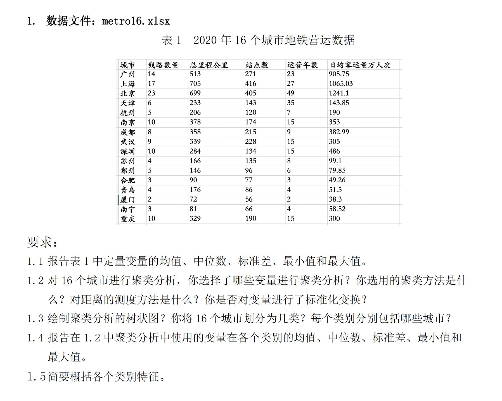

课程安排和考核
课程安排
| 周 | 日期 | 安排 |
|---|---|---|
| 第1周 | 20250904 | 第1章 课程介绍和R操作回顾 |
| 第2周 | 20250911 | 第4章 聚类分析 I |
| 第3周 | 20250918 | 第4章 聚类分析 II |
| 第4周 | 20250925 | 第5章 判别分析 案例讨论I |
| 第5周 | 20251002 | 国庆放假 |
| 第6周 | 20251009 | 第6章 主成分分析 |
| 第7周 | 20251015 | 第4-6章 习题讲评 测验及讲评 (上机开卷) |
| 第8周 | 20251023 | 第7章 因子分析I 案例讨论II |
| 第9周 | 20251030 | 第8章 对应分析 |
| 第10周 | 20251106 | 第9章 典型相关分析 案例讨论III |
| 第11周 | 20251113 | 复习答疑 |
| 第12周 | 20251120 | 小组作业汇报 |
See Table 1.
课程考核
平时成绩：50%
个人作业：15%
小组作业(案例分析)：20%
测验：10%
考勤： 5%
期末考查：课程论文 50%
课程论文
每位同学独立撰写，选题不能与小组作业雷同
提交：将下述文件发至lizongzhang9@qq.com
R项目文件(R代码, 数据文件等), 项目文件用学号命名，压缩成”学号.zip”
- R代码文件：将所有的R代码写在一个代码文件中，按运用的方法对代码分节
课程论文的PDF, , 课程论文用“学号+姓名+多元统计.pdf”命名
提交时限：第14周周日2025-12-7-20:00
课程论文框架
封面
题目 班级 学号 姓名
1 前言
研究背景、选题动机、研究目标、要研究的问题
研究背景：简要说明研究所关注的现象或对象在现实中的意义，说明选题的重要性。
选题动机：结合个人经验、兴趣或课程要求说明为什么选择这个主题，说明“我为什么选这个题目”，写出真实感受，避免空话
研究目标：具体化, 例如: 将研究对象划分为若干典型群体; 找出区分不同群体的关键变量及判别规则; 对高维变量进行降维并提取公共因子; 揭示两组变量之间的深层关联结构。
研究问题：明确列出3-5个本研究要回答的核心问题，例如: 研究对象可以划分为哪几种典型类型？哪些变量最能有效区分不同群体？高维变量背后是否存在少数几个潜在公共因子？两组变量之间是否存在显著的相关性？
2 数据概况
介绍数据来源、数据收集过程、解释变量的含义
数据来源：说明数据的出处,如来自公共数据库，应注明来源平台及下载时间。
数据收集：解释数据是如何收集的，异常值、缺失值的处理等
用表格呈现所有变量的：变量名、含义、类型（定性/定量）、单位、均值、标准差、最小值、最大值。
数据要求
截面数据
样本容量建议 ≥ 60, 最好超过100
至少8个以上定量变量
至少3个以上定性变量
不可使用虚拟数据
运用聚类/判别/主成分/因子/对应/典型相关分析方法，至少运用4种方法
3 聚类分析
3.1 分析目的
- 明确聚类的意图：划分群体、发现模式
3.2 方法选择
系统聚类或K-means聚类
说明选择理由（样本量、可解释性）
3.3 分析过程
是否对变量进行了标准化处理？(你的处理方式的理由)
聚类方法和距离度量（欧氏距离、最短距离法等）
聚类数目确定依据（树状图、拐点法）
3.4 结果与解释
用树状图等展示结果
描述每类的特征（平均值, 分布差异, 分组直方图）
4 判别分析
4.1 分析目的
- 根据已知分组建立判别函数，用于分类
4.2 方法选择
Fisher判别或逐步判别法
判别变量选择标准（Wilks’ Lambda）
4.3 分析过程
建立判别函数，给出系数
交叉验证或留一法评价判别正确率
4.4 结果与解释
判别准确率表格
分析哪些群体容易误判、误判原因（变量重叠、样本量不平衡等）
5 主成分分析
5.1 分析目的
- 降维、提取主要信息
5.2 分析过程
相关矩阵/协方差矩阵
特征值>1原则、累计贡献率≥85%
碎石图展示拐点
可视化工(如主成分得分散点图，Correlation Circle等)
5.3 结果解释
主成分载荷矩阵
对每个主成分进行命名
写出主成分得分函数
6 因子分析
6.1 分析目的
- 探索潜在因子，简化变量结构
6.2 分析过程
KMO和Bartlett检验结果
因子提取方法：主成分法、最大似然法
因子是否旋转
6.3 结果解释
因子载荷表（隐藏<0.4的载荷）
对每个公共因子命名并解释其现实意义
计算因子得分
7 对应分析
7.1 分析目的
- 探索两个定性变量的关联关系，将列联表降维至二维空间，用图形直观展示类别间的亲疏关系。
7.2 分析过程
构建列联表，进行卡方独立性检验（报告χ²值、p值）；
若显著，进行对应分析，提取前两维；
绘制对应图展示行、列类别的位置关系。
7.3 结果解释
对应图中点距离越近，说明该类别组合越常出现
可识别相似类别的聚集和差异
8 典型相关分析
8.1 分析目的
- 研究两组连续变量之间的整体相关性，提取相关性最强的线性组合。
8.2 分析过程
将变量划分为两组，明确哪几个变量属于组1、哪几个属于组2，计算协方差矩阵
报告每一对典型变量之间的相关系数，及其显著性检验结果
绘制典型变量u1和典型变量v1的散点图
绘制helio plot放射状图展示典型变量与原始变量的关系。
8.3 结果解释
报告第一对典型变量的系数和载荷
解读两组变量的关系，解释现实意义
9 结论和展望
总结主要发现
研究不足
展望未来研究方向
课程感想
测验
答题要求
项目命名: 文件夹及压缩包统一命名为：学号姓名（无空格），例如：20210008张三；提交压缩包为 20210008张三.zip。
R代码文件，按题号分节。每题先写实现该小题的R代码，每小题代码下方用文字简要回答题目要求。
提交说明: 将整个项目文件夹压缩为 学号姓名.zip。 通过电子邮件发送压缩包到指定提交邮箱lizongzhang9@qq.com。 邮件主题：多元统计测验 学号姓名
第1题

 点击下载数据文件: 第1题: metro16.xlsx
点击下载数据文件: 第1题: metro16.xlsx